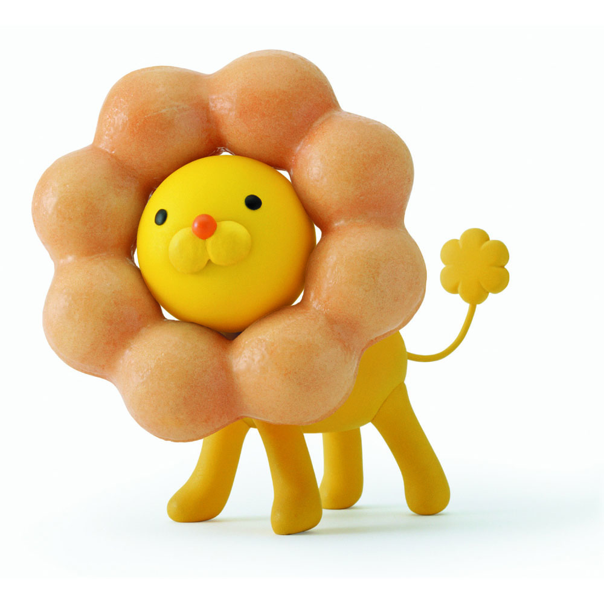

キャラクターデザイン
← ステッカーの山にもどる
ポン・デ・ライオン（仮）
ここに事例の説明が入ります。どんな依頼で、何を考えて、どうつくったか。 ダミーテキストです。実データが入るまでの構成確認用のページなので、 文章のボリューム感だけ参考にしてください。（仮テキスト）
| クライアント | 株式会社〇〇〇〇（仮） |
|---|---|
| 年 | 20XX |
| 担当領域 | キャラクターデザイン / 世界観設計（仮） |
| クレジット | Design: 〇〇 / Direction: 〇〇（仮） |